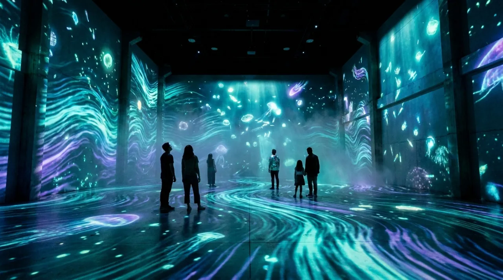
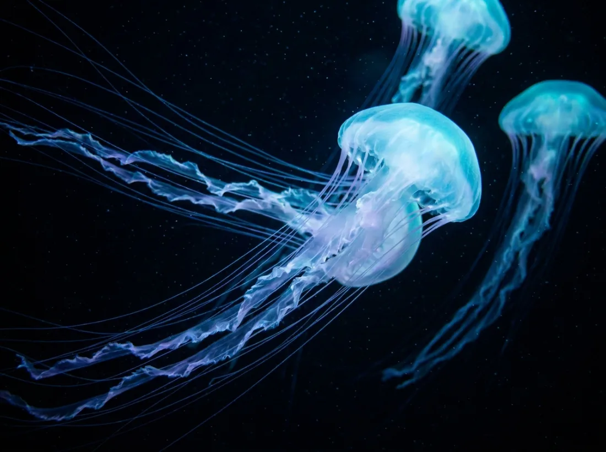
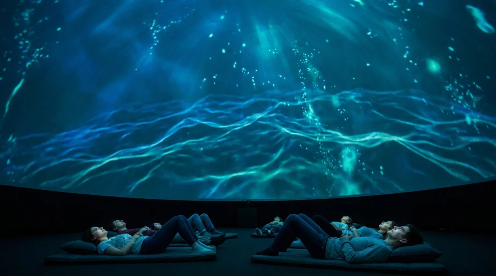

展區一
深淵之光 ABYSSAL GLOW
推開最後一道門，光全部消失。當瞳孔慢慢適應，整面牆與腳下的地板開始浮現流動的青藍螢光——那是數以萬計的浮游生物正環繞著你。你的每一步、每一次靠近，都會在光的海面上盪開漣漪。這是墜入深海的第一刻。
理念 PHILOSOPHY
在水深兩百公尺以下，陽光再也照不到，海洋進入永恆的黑。然而那裡並非死寂——超過九成的深海生物會自己發光，用一閃一閃的螢藍與冷青，在無盡的黑暗中彼此呼喚。那是地球上最古老、也最溫柔的光。
螢海 LUMINA 想做的，是把這片人眼幾乎無緣親見的螢光海，搬進城市裡。我們以即時運算的粒子流、深度感測的互動投影與環繞低頻聲響，重建深海的尺度與呼吸。沒有解說牌，沒有指定動線，只有你、黑暗，與緩緩亮起的整片海。
展演 INSTALLATIONS
每一區都是一件獨立的沉浸式光影裝置，從墜入深淵、隨光漂游，到躺臥於整片發光的穹頂之海。建議依序體驗，讓黑暗一層層為你亮起。

展區一
推開最後一道門，光全部消失。當瞳孔慢慢適應，整面牆與腳下的地板開始浮現流動的青藍螢光——那是數以萬計的浮游生物正環繞著你。你的每一步、每一次靠近，都會在光的海面上盪開漣漪。這是墜入深海的第一刻。

展區二
水母不游泳，牠隨海漂流。在這一區，巨大的發光水母群在你頭頂與身側緩緩漂移，傘狀體一張一縮地呼吸，拖曳出青紫色的光痕。時間在此變慢，你會不自覺地放慢腳步、調勻呼吸，與整個空間同步起伏。這是最接近冥想的一段旅程。

展區三
旅程的終點，是一座可以躺下的海。在直徑十二公尺的投影穹頂下，整片深海的螢光在你頭頂緩緩流轉，潮汐般的波紋從四面八方湧來，又退去。沒有方向，沒有上下，你只是漂浮在光裡。許多人在這裡待到閉館，捨不得起身。
體驗方案 EXPERIENCE
採預約分時段入場，每場人數有限，確保每個人都有足夠的黑暗與光。完整動線約 50 至 70 分鐘，可自由停留、重複折返，按自己的節奏與海相處。
適合品牌發表、產品上市、團隊聚會與貴賓款待。可獨享整個空間，搭配迎賓飲品、現場導聆與專屬投影內容，讓賓客在一片發光的海裡留下難忘的夜晚。
把螢海的技術帶到你的場域。從商空、展場、旗艦店到品牌快閃，我們提供互動投影、生成式光影與聲響裝置的整體設計、製作與現場安裝，量身打造屬於你的那片海。
觀展流程 VISIT
選擇日期與分時段，留下聯絡方式。個人觀展與企業包場皆可線上送出需求，我們會盡快回覆確認。
抵達後於序場稍作停留，讓眼睛從城市的亮，慢慢沉入深海的黑。工作人員會說明動線與拍攝禮儀。
依序走過深淵、螢游與穹頂三區，或自由折返。沒有計時催促，留多久，由你與海決定。
於休憩區喝杯溫熱飲品，讓身體慢慢回到日常。許多人帶走的，不只是照片，而是一段安靜下來的時間。
預約・聯絡 CONTACT